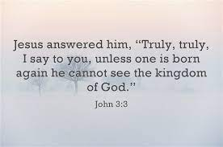

In the years of 2020, I became a new born Christian. I am nothing without my Lord and Savior Jesus Christ.
What taught me the importance of having a relationship with God were the YouTube videos from a man named Ray Comfort.
Living Waters: He Didn't Care About God...but was in Tears After Hearing This